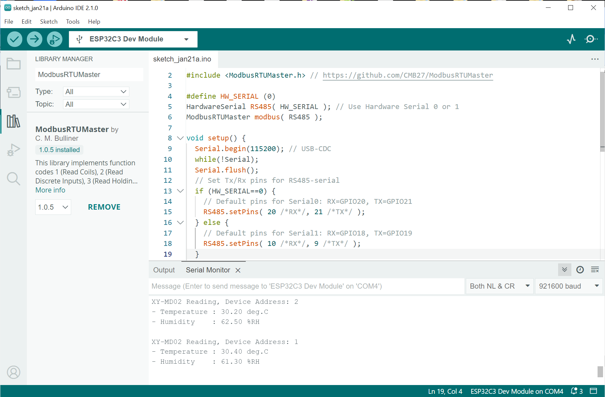

การใช้งานโมดูล XY-MD02 Temperature & Humidity Sensor (RS485 Modbus RTU)#
บทความนี้กล่าวถึงการทดลองใช้งานโมดูล XY-MD02 Sensor (ผลิตจากประเทศจีน) ซึ่งเป็นเซนเซอร์วัดอุณหภูมิ (Temperature) และความชื้นสัมพัทธ์ (Relative Humidity) เชื่อมต่อด้วยบัส RS485 และใช้โพรโทคอล Modbus RTU ในการสื่อสารข้อมูล
Keywords: Temperature & Relative Humidity Sensor, RS485, Modbus RTU, Python Programming
▷ XY-MD02#
ข้อมูลเชิงเทคนิคเกี่ยวกับโมดูล XY-MD02
- ใช้แรงดันไฟเลี้ยงได้ในช่วง 5V ~ 30V (DC)
- มีไอซีลดระดับและควบคุมแรงดันให้ได้ 3.3V
- มีกล่องพลาสติกยึดได้กับรางปีกนก (DIN Rail)
- มีคอนเนกเตอร์เป็นแบบ Terminal Blocks: B-, A+, GND(-), VCC(+)
- เชื่อมต่อด้วยบัส RS485 และใช้ไอซี RS485 Transceiver (3.3V) และทำหน้าที่เป็นอุปกรณ์ RS485 Slave
- สื่อสารข้อมูลด้วยสองวิธี
- Modbus RTU (Remote Terminal Unit) RS485 Protocol
- Serial ASCII Command เช่น คำสั่ง
READ,PARAMเป็นต้น
- อัตราการส่งข้อมูลแบบบิตอนุกรม: 9600 (default) และ 19200 (max.)
- Data Bits: 8
- Parity Bit: No
- Stop Bit: 1
- ตั้งค่าหมายเลขอุปกรณ์ได้ในช่วง 1 ~ 247 (default: 1)
- ใช้ไอซีของบริษัท Sensirion
- Temperature Range: -40 ~ 125 °C
- Humidity Range: 0 ~ 100 %RH
- SHT20 (I2C):
- Temperature Precision: +/-0.3 ℃
- Humidity Precision: +/-3 %RH
- SHTC3 (I2C):
- Temperature Precision: +/-0.2 ℃
- Humidity Precision: +/-2 %RH
- SHT40 (I2C):
- Temperature Precision: +/-0.2 ℃
- Humidity Precision: +/-2 %RH
โมดูล XY-MD02 (SHT40) มีการใช้ไอซี เช่น
- HK32F030M MCU:
- Arm Cortex-M0, 32MHz, 16KB flash, 2KB / 4MB SRAM
- SHT40:
- I2C with Pullup: 4.7k Ohm (on SCL and SDA line)
- SP3485E
- Half-Duplex RS-485 Transceiver
- SOIC-8
- L5J / TPL820F33–89:
- 3.3V LDO Voltage Regulator
- Current Output: 180mA (max.) @3.3V
- Wide Input Voltage Range: 3.6V to 42V
- SOT-89–3
รูป: แผงวงจรภายในโมดูล XY-MD02
รูป: ไอซี SHT40 บนแผงวงจรของโมดูล
▷ RS485 Interfacing#
ในการใช้งานโมดูล XY-MD02 กับคอมพิวเตอร์ จะต้องมีอุปกรณ์ USB-to-RS485 Transceiver แต่ถ้าจะใช้กับบอร์ดไมโครคอนโทรลเลอร์ จะต้องมีโมดูล RS485 Transceiver ที่รับส่งข้อมูลแบบบิตอนุกรม (Serial)
โมดูล RS485 Transceiver แบ่งได้เป็น 2 กลุ่มตามลักษณะการใช้งานขา I/O สำหรับการเชื่อมต่อกับไมโครคอนโทรลเลอร์
- ประเภทแรกมีขา DE, /RE, DI, RO
- VCC, GND (Supply Voltage)
- A+, B- (RS485 Differential Signal Pair)
- DE (Driver Enable, Active-High)
- /RE (Receiver Enable, Active-Low)
- DI (Driver Input)
- RO (Receiver Output)
- ประเภทที่สองมีขา TX, RX และเนื่องจากว่า มีวงจรควบคุมการเปลี่ยนทิศทางการรับส่งข้อมูลโดยอัตโนมัติ
(Automatic Flow Control)
จึงใช้งานได้สะดวกกว่า เหมือนการสื่อสารข้อมูลกับโมดูล Serial (TTL Logic) โดยทั่วไป
- VCC, GND (Supply Voltage)
- A+, B- (RS485 Differential Signal Pair)
- TX (Serial Out)
- RX (Serial In)
แนะนำให้ใช้งานโมดูลประเภทที่สอง เนื่องจากใช้งานได้ง่ายกว่า
รูป: ตัวอย่างโมดูล RS485 Transceiver "HW-97" (MAX485, 5V)
รูป: ตัวอย่างโมดูล RS485 Transceiver "HW-0519" (MAX485, 5V)
รูป: ตัวอย่างโมดูล RS485 Transceiver (MAX1348, 3.3V ~ 5V)
รูป: การใช้แรงดันไฟเลี้ยง (5V หรือสูงกว่า)
รูป: ตัวอย่างการเชื่อมต่อโมดูล XY-MD02 ในระบบบัส RS485
▷ Modbus RTU over RS485#
โดยทั่วไปแล้ว การสื่อสารข้อมูลด้วยโพรโทคอล Modbus มี 3 รูปแบบ
- Modbus over Serial
- Modbus RTU (binary) โดยใช้ RS485 เป็น Serial / Physical Layer
- Modbus ASCII เหมือน Modbus RTU แต่ข้อมูลเป็น ASCI (Text-based)
- Modbus over TCP โดยใช้ระบบเครือข่ายและสื่อสารด้วย TCP/IP
โมดูล XY-MD02 สื่อสารด้วยโพรโทคอล Modbus RTU ซึ่งจะต้องมีการส่งเฟรมหรือชุดข้อมูลไบต์ออกไป (Request Frame) และรับข้อมูลที่ตอบกลับมา (Response Frame) ทั้งการส่งและการรับเฟรมข้อมูล จะต้องมีการตรวจสอบความผิดพลาดด้วย CRC (Cyclic Redundancy Check) จำนวน 2 ไบต์ ที่อยู่สองไบต์ท้ายของเฟรมข้อมูล
คอมพิวเตอร์หรือไมโครคอนโทรลเลอร์จะทำหน้าที่เป็น Modbus Master และอุปกรณ์เซนเซอร์ XY-MD02 จะทำหน้าที่เป็น Modbus Slave เชื่อมต่อกันด้วยระบบบัส RS485
ตามโพรโทคอลของ Modbus RTU การเขียนหรืออ่านข้อมูลรีจิสเตอร์ แต่ละตัวมีขนาด 2 ไบต์ หรือ 16 บิต ( Big-endian encoding) มีการจำแนกประเภทหรือแบ่งกลุ่มซึ่งจะใช้ คำสั่ง Function Code (FC) แตกต่างกัน เช่น
- Input Registers เป็นรีจิสเตอร์สำหรับข้อมูล (ขนาด 2 ไบต์) ที่ใช้เป็นอินพุตของโมดูลหรือมีการเปลี่ยนแปลงได้
- ใช้คำสั่ง FC = 0x04 (Read Input Registers) อ่านค่าจากรีจิสเตอร์หนึ่งตัว (หรือมากกว่าหนึ่งตัวแต่มีแอดเดรสต่อเนื่องกัน)
- Holding Registers เป็นรีจิสเตอร์สำหรับข้อมูล (ขนาด 2 ไบต์) เช่น การตั้งค่าการใช้งานสำหรับโมดูล
- ใช้คำสั่ง FC = 0x03 (Read Multiple Holding Registers) อ่านค่าจากรีจิสเตอร์หนึ่งตัว (หรือมากกว่าหนึ่งตัวแต่มีแอดเดรสต่อเนื่องกัน)
- ใช้คำสั่ง FC = 0x06 (Write Single Holding Register) เขียนค่าลงในรีจิสเตอร์หนึ่งตัว
- ใช้คำสั่ง FC = 0x10 (Write Multiple Holding Registers) เขียนค่าลงในรีจิสเตอร์มากกว่าหนึ่งตัว
โมดูล XY-MD02 มีรีจิสเตอร์ดังนี้
| Type | Name | Size (bytes) | Register Address |
|---|---|---|---|
| Input Reg. | Temperature | 2 | 0x0001 |
| Input Reg. | Humidity | 2 | 0x0002 |
| Holding Reg. | Device Address | 2 | 0x0101 |
| Holding Reg. | Baud Rate | 2 | 0x0102 |
| Holding Reg. | Temperature Correction | 2 | 0x0103 |
| Holding Reg. | Humidity Correction | 2 | 0x0104 |
- ค่าอุณหภูมิ และ ความชื้นสัมพัทธ์ อ่านได้จากรีจิสเตอร์ตามแอดเดรส
0x0001และ0x0002ตามลำดับ ค่าตัวเลขที่อ่านได้เป็น Signed 16-bit Integer และจะต้องนำไปหารด้วย 10.0 - รีจิสเตอร์ตามแอดเดรส
0x0101ใช้สำหรับการตั้งค่าหรือตรวจสอบหมายเลขอุปกรณ์ - รีจิสเตอร์ตามแอดเดรส
0x0102ใช้สำหรับการตั้งค่าหรือตรวจสอบค่า Baudrate - รีจิสเตอร์ตามแอดเดรส
0x0103ใช้สำหรับการตั้งค่าหรือตรวจสอบค่าชดเชยความผิดพลาดสำหรับอุณหภูมิ (เป็นค่าที่ใช้ในการบวกหรือลบ อยู่ในช่วง -10 ~ +10 °C) - รีจิสเตอร์ตามแอดเดรส
0x0104ใช้สำหรับการตั้งค่าหรือตรวจสอบค่าชดเชยความผิดพลาดสำหรับความชื้น (เป็นค่าที่ใช้ในการบวกหรือลบ อยู่ในช่วง -10 ~ +10 %RH)
ตัวอย่างเฟรมข้อมูลสำหรับการส่งไปยังโมดูลเซนเซอร์ ตามลำดับมีดังนี้
- แอดเดรสของโมดูล (Device Address) ที่ทำหน้าที่เป็น RS485 Slave (1~247): 1 ไบต์
- รหัสสำหรับฟังก์ชัน (Function Code) เช่น
0x03หรือ0x04: 1 ไบต์ - แอดเดรสเริ่มต้นของรีจิสเตอร์ที่ต้องการอ่านข้อมูล: 2 ไบต์ (16-bit integer)
- จำนวนรีจิสเตอร์ที่ต้องการอ่าน: 2 ไบต์ (16-bit integer)
- ตัวเลขสำหรับการตรวจสอบความผิดพลาด (CRC): 2 ไบต์ (16-bit integer)
และเฟรมข้อมูลสำหรับการตอบกลับ
- แอดเดรสของโมดูลที่ทำหน้าที่เป็น RS485 Slave และได้ตอบกลับมา: 1 ไบต์
- รหัสสำหรับฟังก์ชัน: 1 ไบต์
- จำนวนไบต์ของข้อมูลที่ตามมา: N ไบต์
- ข้อมูลจากรีจิสเตอร์
- ตัวเลขสำหรับการตรวจสอบความผิดพลาด: 2 ไบต์
ตัวอย่างเฟรมข้อมูล
รูป: ตัวอย่างเฟรมข้อมูลสำหรับการส่งออกไปโดย RS485 Master และเฟรมข้อมูลการตอบกลับจาก RS485 Slave (อ้างอิงจากเอกสารของผู้ผลิต)
รูป: ตัวอย่างการใช้คำสั่ง 0x04 สำหรับการอ่านค่าจากรีจิสเตอร์ที่เก็บค่าอุณหภูมิ (แอดเดรส: 0x0001)
และการตอบกลับมาจากโมดูลเซนเซอร์
รูป: ตัวอย่างการใช้คำสั่ง 0x04 สำหรับการอ่านค่าจากรีจิสเตอร์ที่เก็บค่าความชื้นสัมพัทธ์ (แอดเดรส: 0x0002)
และการตอบกลับมา
สำหรับการใช้คำสั่งและเฟรมข้อมูลที่เกี่ยวข้อง สามารถศึกษาได้จากเอกสารคู่มือการใช้งาน (PDF files): (1 | 2)
▷ Python Coding Using PySerial#
การเขียนโค้ดด้วย Python เพื่อเชื่อมต่อกับโมดูล XY-MD02
จะต้องใช้ไลบรารี PySerial (ติดตั้งด้วยคำสั่ง pip3 install pyserial)
โค้ดต่อไปนี้สาธิตการส่งคำสั่งเพื่ออ่านค่าจากรีจิสเตอร์-อินพุต ได้แก่ อุณหภูมิและความชื้นสัมพัทธ์
รวมถึงการอ่านค่าจากรีจิสเตอร์ที่เก็บค่าสำหรับการตั้งค่าใช้งานของโมดูล
การอ่านค่าจากรีจิสเตอร์ทีละตัว จะใช้ฟังก์ชัน read_single_reg(...)
import time
import struct
from datetime import datetime
import serial
DEV_ADDR = 0x01
SERIAL_PORT = '/dev/ttyUSB0'
#SERIAL_PORT = 'COM54'
BAUDRATE = 9600
# Calculate the CRC of a Modbus RTU response.
def calc_modbus_crc(data):
crc = 0xFFFF
for x in data:
crc ^= x
for _ in range(8):
if crc & 1:
crc >>= 1
crc ^= 0xA001
else:
crc >>= 1
return crc
def read_single_reg( ser, dev_addr, func_code, reg_addr ):
reg_addr_hi = (reg_addr >> 8) & 0xff
reg_addr_lo = reg_addr & 0xff
frame = [dev_addr, func_code, reg_addr_hi, reg_addr_lo, 0x00, 0x01]
crc = calc_modbus_crc( frame )
frame.append( crc & 0xff )
frame.append( (crc >> 8) & 0xff )
ser.write( bytes(frame) )
time.sleep(0.1)
resp_frame = ser.read(10)
expected_crc = int.from_bytes(resp_frame[-2:], byteorder='little')
calculated_crc = calc_modbus_crc(resp_frame[:-2])
if calculated_crc == expected_crc:
return resp_frame
else:
print( 'CRC error: ', calculated_crc, expected_crc )
return None
# Open the serial port
ser = serial.Serial(port=SERIAL_PORT, baudrate=BAUDRATE, timeout=0.1)
holding_regs = [0x0101, 0x0102, 0x0103, 0x0104]
names = [ 'Device address: {}',
'Baudrate: {}',
'Temperature Correction: {}',
'Humudity Correction: {}' ]
values = []
for reg in holding_regs:
resp = read_single_reg( ser, DEV_ADDR, 0x03, reg )
if resp is not None:
values.append( struct.unpack('>h', resp[3:5])[0] )
for i,kv in enumerate(zip(names,values)):
if i==2 or i==3:
print ( kv[0].format(kv[1]/10.0) )
else:
print ( kv[0].format(kv[1]) )
input_regs = [0x0001, 0x0002]
names = [ 'Temperature: {:.1f} deg.C', 'Humidity: {:.1f} %RH' ]
try:
while True:
values = []
for reg in input_regs:
resp = read_single_reg( ser, DEV_ADDR, 0x04, reg )
if resp is not None:
value = struct.unpack('>h', resp[3:5])[0]
values.append( value/10.0 )
ts = datetime.now().replace(microsecond=0)
print( f"Timestamp:", ts )
for name, value in zip(names,values):
print( name.format( value ) )
print(40*'-')
time.sleep(4.0)
except KeyboardInterrupt:
pass
finally:
if ser:
ser.close()
รูป: การเขียนโค้ดและรันโค้ดด้วย VS Code IDE
รูป: การวัดสัญญาณ A+ และ B- ด้วยออสซิลโลสโคป
โค้ดตัวอย่างถัดไปสาธิต การเขียนค่าลงในรีจิสเตอร์ตามแอดเดรส 0x0103 (Temperature Correction)
โดยใช้คำสั่ง Function Code เท่ากับ 0x06 และใช้กับอุปกรณ์หมายเลข 0x01
การเขียนค่าไปยังรีจิสเตอร์หนึ่งตัว จะใช้ฟังก์ชัน write_single_reg(...)
ถ้าต้องการให้มีการปรับชดเชยค่า เช่น +0.5 องศาเซลเซียส จะต้องคูณด้วย 10 แล้วแปลงให้เป็นเลข 16-bit signed integer
เพื่อเขียนลงในรีจิสเตอร์
import time
import struct
from datetime import datetime
import serial
DEV_ADDR = 0x01
SERIAL_PORT = '/dev/ttyUSB0'
BAUDRATE = 9600
def calc_modbus_crc(data):
crc = 0xFFFF
for x in data:
crc ^= x
for _ in range(8):
if crc & 1:
crc >>= 1
crc ^= 0xA001
else:
crc >>= 1
return crc
def write_single_reg( ser, dev_addr, func_code, reg_addr, value ):
reg_addr_hi = (reg_addr >> 8) & 0xff
reg_addr_lo = reg_addr & 0xff
value_hi = (value >> 8) & 0xff
value_lo = value & 0xff
frame = [dev_addr, func_code, reg_addr_hi, reg_addr_lo,
value_hi, value_lo]
crc = calc_modbus_crc( frame )
frame.append( crc & 0xff )
frame.append( (crc >> 8) & 0xff )
ser.write( bytes(frame) )
time.sleep(0.1)
resp_frame = ser.read(10)
expected_crc = int.from_bytes(resp_frame[-2:], byteorder='little')
calculated_crc = calc_modbus_crc(resp_frame[:-2])
if calculated_crc == expected_crc:
return resp_frame
else:
print( 'CRC error: ', calculated_crc, expected_crc )
return None
# Open the serial port
ser = serial.Serial(port=SERIAL_PORT, baudrate=BAUDRATE, timeout=0.1)
# Set temperature correction (TC) in deg.C, multipled by 10
TC = 0.5
resp = write_single_reg( ser, DEV_ADDR, 0x06, 0x0103, int(TC*10) )
print( resp )
if ser:
ser.close()
▷ Python Coding Using PySerial + MinimalModbus#
โค้ดตัวอย่างถัดไปสาธิตการใช้ไลบรารี MinimalModbus
(ติดตั้งโดยทำคำสั่ง $ pip3 install minimalmodbus)
เพื่ออ่านค่าอุณหภูมิและความชื้นสัมพัทธ์ จากอุปกรณ์ที่มีแอดเดรส 0x01
import time
import minimalmodbus
# Set the slave address
DEV_ADDR = 1
# Specify the serial port to be used
PORT_NAME = '/dev/ttyUSB0'
FUNC_CODE = 4
REG_ADDR_TEMP = 1
REG_ADDR_HUMID = 2
# MODBUS device initialization
device = minimalmodbus.Instrument(PORT_NAME, DEV_ADDR, debug=True)
# MODBUS device connection settings
device.serial.baudrate = 9600
device.serial.bytesize = 8
device.serial.parity = minimalmodbus.serial.PARITY_NONE
device.mode = minimalmodbus.MODE_RTU
device.serial.stopbits = 1
device.serial.timeout = 0.1
while True:
try:
# Reg. address (1 or 2), number of decimals (1), function code (4)
temp = device.read_register(REG_ADDR_TEMP, 1, FUNC_CODE )
humid = device.read_register(REG_ADDR_HUMID, 1, FUNC_CODE )
print(40*"-")
print("Temperature:", temp)
print("Humidity:", humid)
except IOError:
print("Failed to read from the device!")
time.sleep(4.0)

รูป: การสาธิตการทำงานของโค้ดตัวอย่างที่ใช้ไลบรารี MinimalModbus
▷ Arduino ESP32(C3) with ModbusRTUMaster Library#
โค้ดตัวอย่างต่อไปนี้สาธิตการใช้งานไลบรารี ModbusRTUMaster
ร่วมกับบอร์ดไมโครคอนโทรลเลอร์ ESP32C3 และเขียนโปรแกรมด้วย Arduino ESP32 Core (v3.0)
ในโค้ดตัวอย่างได้เลือกใช้ HardwareSerial
ระหว่าง Serial0 หรือ Serial1 และต้องมีการกำหนดขา Rx/Tx เพื่อนำไปเชื่อมต่อกับโมดูล
XY-017 Serial-RS485 Transceiver ซึ่งสามารถใช้แรงดันไฟเลี้ยง 3.3V ได้
ข้อสังเกต: โมดูล XY-017 มีขา TXD เป็นอินพุต และมีขา RXD เป็นเอาต์พุต
#include <HardwareSerial.h>
#include <ModbusRTUMaster.h> // https://github.com/CMB27/ModbusRTUMaster
#define HW_SERIAL (0)
HardwareSerial RS485( HW_SERIAL ); // Use Hardware Serial 0 or 1
ModbusRTUMaster modbus( RS485 );
void setup() {
Serial.begin(115200); // USB-CDC
while(!Serial);
Serial.flush();
// Set Tx/Rx pins for RS485-serial
if (HW_SERIAL==0) {
// Default pins for Serial0: RX=GPIO20, TX=GPIO21
RS485.setPins( 20 /*RX*/, 21 /*TX*/ );
} else {
// Default pins for Serial1: RX=GPIO18, TX=GPIO19
// Use RX=10 and TX=9 for Super-Mini ESP32C3 Board.
RS485.setPins( 10 /*RX*/, 9 /*TX*/ );
}
// Set baudrate for RS485-serial
modbus.begin( 9600 );
}
void loop() {
static uint8_t dev_addr = 1;
uint16_t regValues[2] = {0xffff,0xffff};
// device address, starting address of input registers,
// number of input registers to read
modbus.readInputRegisters( dev_addr, 0x0001, regValues, 2 );
if ( regValues[0] != 0xffff ) {
float temp = ((int16_t)regValues[0])/10.0f;
float humid = ((int16_t)regValues[1])/10.0f;
Serial.println(String("XY-MD02 Reading, Device Address: ") + dev_addr);
Serial.println(String("- Temperature : ") + temp + String(" deg.C"));
Serial.println(String("- Humidity : ") + humid + String(" %RH\n"));
} else {
Serial.println("Sensor reading errors!");
}
Serial.flush();
if ((dev_addr += 1) > 2) {
dev_addr = 1;
}
delay(2000);
}

รูป: การสาธิตการทำงานของโค้ด Arduino Sketch ที่ใช้ไลบรารี ModbusRTUMaster
รูป: โมดูล XY-017 และตัวอย่างผังวงจร
รูป: ตัวอย่างการเชื่อมต่อระหว่างอุปกรณ์ ได้แก่ Super-Mini ESP32-C3, XY-017 และ XY-MD02
ตัวอย่างการเขียนโค้ดโดยไม่ใช้ไลบรารีสำหรับการอ่านค่าจากรีจิสเตอร์ มีดังนี้
#include <HardwareSerial.h>
#define HW_SERIAL (0)
HardwareSerial RS485( HW_SERIAL ); // Use Hardware Serial 0 or 1
void setup() {
Serial.begin(115200); // USB-CDC
while(!Serial);
Serial.flush();
RS485.begin(9600);
// Set Tx/Rx pins for RS485-serial
if (HW_SERIAL==0) {
// Default pins for Serial0: RX=GPIO20, TX=GPIO21
RS485.setPins( 20 /*RX*/, 21 /*TX*/ );
} else {
// Default pins for Serial1: RX=GPIO18, TX=GPIO19
RS485.setPins( 10 /*RX*/, 9 /*TX*/ );
}
}
// Calculate the CRC of a Modbus RTU response.
uint16_t calc_modbus_crc(const byte* data, size_t len) {
uint16_t crc = 0xFFFF;
for (size_t i=0; i < len; i++) {
crc ^= data[i];
for (int j=0; j < 8; j++) {
if (crc & 1) {
crc >>= 1;
crc ^= 0xA001;
} else {
crc >>= 1;
}
}
}
return crc;
}
// Function to read a single Modbus register
int read_input_regs( byte dev_addr, byte func_code,
uint16_t start_reg_addr, size_t num_regs, byte *result )
{
byte reg_addr_hi = (start_reg_addr >> 8) & 0xFF;
byte reg_addr_lo = start_reg_addr & 0xFF;
byte num_regs_hi = (num_regs >> 8) & 0xFF;
byte num_regs_lo = num_regs & 0xFF;
byte req_frame[8] = { dev_addr, func_code, reg_addr_hi, reg_addr_lo,
num_regs_hi, num_regs_lo };
size_t req_frame_len = sizeof(req_frame);
uint16_t crc = calc_modbus_crc(req_frame, req_frame_len-2 );
req_frame[req_frame_len-2] = crc & 0xff;
req_frame[req_frame_len-1] = (crc >> 8) & 0xff;
RS485.write( req_frame, req_frame_len );
delay(5);
byte resp_frame[16] = {0};
size_t resp_frame_len = RS485.readBytes( resp_frame, 16 );
if (resp_frame_len == 0) {
return -1; // error
}
byte *crc_bytes = &resp_frame[resp_frame_len-2];
uint16_t expected_crc = (crc_bytes[1] << 8) | crc_bytes[0];
uint16_t calculated_crc = calc_modbus_crc(resp_frame, resp_frame_len-2);
if (calculated_crc == expected_crc) {
memcpy( result, resp_frame, resp_frame_len );
return 0; // ok
} else {
Serial.print("CRC error: ");
Serial.print(calculated_crc, HEX);
Serial.print(" : ");
Serial.println( expected_crc, HEX);
return -1; // error
}
}
void loop() {
static uint8_t dev_addr = 1;
byte result[16]; // frame buffer for response
memset(result, 0x00, sizeof(byte));
if ( !read_input_regs( dev_addr, 0x04, 0x0001, 2, result ) ) {
int16_t temp = (result[3]<< 8) | result[4];
int16_t humid = (result[5]<< 8) | result[6];
Serial.println(String("XY-MD02 Reading, Device Address: ") + dev_addr);
Serial.println(String("Temperature: ") + temp/10.0f + " deg.C");
Serial.println(String("Humidity: ") + humid/10.0f + " %RH");
} else {
Serial.println("Sensor reading errors!");
}
Serial.flush();
if ( (dev_addr += 1) > 2 ) {
dev_addr = 1;
}
Serial.println("----------------");
delay(2000);
}
▷ กล่าวสรุป#
บทความนี้ได้นำเสนอการใช้งานโมดูล XY-MD02 Sensor การเชื่อมต่อกับคอมพิวเตอร์ทางพอร์ต USB รูปแบบของการส่งคำสั่งและการตอบกลับจากโมดูลโดยใช้โพรโทคอล RS485 Modbus RTUS เพื่ออ่านค่าจากเซนเซอร์ และการตั้งค่าการทำงานของโมดูล โดยใช้ภาษา Python และมีตัวอย่างการใช้งานร่วมกับบอร์ดไมโครคอนโทรลเลอร์ เช่น ESP32-C3 และเขียนโค้ดด้วย Arduino ESP32 Core เพื่ออ่านค่าจากโมดูล XY-MD02
บทความที่เกี่ยวข้อง
This work is licensed under a Creative Commons Attribution-ShareAlike 4.0 International License.
Created: 2024-01-19 | Last Updated: 2024-01-26